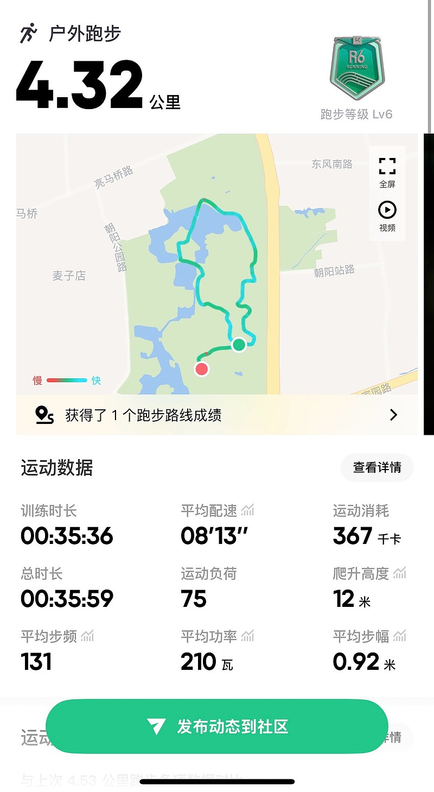
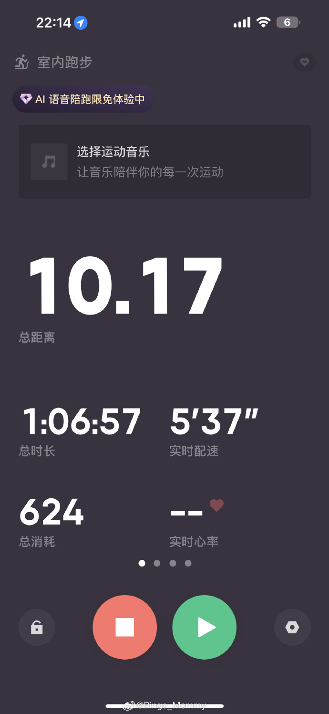

关于“Keep截图”的真相：别让虚假截图毁了你的运动初心



最近刷社交平台，总能看到有人晒“Keep跑步截图”——2公里、10公里、30分钟训练……但细心的你会发现，搜索框里冒出一堆奇怪的
一、“Keep截图”的本质：是记录，更是自律的见证
Keep作为国内热门的运动APP，跑步截图（或运动记录截图）本质是用户完成跑步、健身等训练后，APP自动生成的数据可视化凭证——包含距离、时长、配速、消耗热量、轨迹地图等信息，用来记录进步、分享成果。
比如你跑了5公里，截图会清晰显示：
- 距离：5.00km - 时长：30分15秒 - 配速：6分03秒/公里 - 消耗：约350大卡 - 甚至还有运动轨迹（如果是户外跑）
它是真实运动的可视化总结，也是很多人“坚持运动”的动力来源（比如打卡发朋友圈，倒逼自己坚持）。
二、为什么会出现“Keep截图生成器”“伪造截图”？
搜索框里的“Keep截图生成器”“Keep跑步截图伪造”，暴露了一个尴尬的现实：有人想“走捷径”。
- 社交虚荣心：为了朋友圈“点赞”，用生成器伪造“10公里跑步”截图，假装自己很自律； - 任务/打卡造假：某些“运动打卡群”“公司健康任务”，有人用假截图蒙混过关； - 好奇/恶搞：少数人只是觉得“好玩”，用生成器做恶搞图。
但这种“造假”风险很大：
- 信任危机：一旦被识破（比如轨迹不合理、配速违背常识），会被质疑“人品”； - 自我欺骗：长期用假截图“骗自己”，会失去运动的真实意义（运动是为了健康，不是骗别人）； - 平台规则风险：Keep官方明确反对伪造数据，严重的可能被限制账号功能。
三、那些“奇怪搜索词”的真相（比如“800米Keep截图”“1.5公里Keep截图”）
你可能会问：“为什么有人搜‘800米Keep截图’‘1.5公里Keep截图’？”
其实很简单：不同人需要“不同量级”的真实记录。比如：
- 新手刚开始跑，可能先完成“800米”“1公里”，需要截图记录第一次突破； - 有人做“间歇跑”“短距离训练”，1.5公里、30分钟（比如跳绳+跑步结合）也是常见训练量； - 甚至“Keep截图是什么意思”——完全是新手对“运动记录截图”的认知空白。
这些搜索词，本质是“真实运动需求”的细分：有人要“短距离起步”，有人要“特定时长训练”，有人只是“想了解截图是什么”。
四、真正的“Keep运动记录截图”怎么来？（附实操建议）
别被“生成器”忽悠！想要真实的Keep截图，只需要：
1. 打开Keep APP，开始运动： - 户外跑：点击「跑步」→ 选择「户外跑」→ 开始跑步（手机会自动记录轨迹、距离、配速）； - 室内跑：用跑步机/动感单车，选择「室内跑」→ 手动输入距离/时长（或连接设备自动同步）。 2. 运动后，截图保存： - 运动结束后，APP会自动跳转到“运动报告”页面，直接截图（或用手机自带的「截图」功能，比如iPhone按电源+音量+，安卓按电源+音量-）； - 也可以在「我的」→「运动记录」里找到历史训练，再次截图。 3. 分享/存档： - 想发朋友圈：用APP自带的「分享」功能（更清晰，还能带Keep的水印）； - 想留作纪念：存在手机相册，或导入云盘。
五、关于“Keep截图生成器”的提醒：别碰！
网上所谓的“Keep截图生成器”“在线生成”，大多是模拟界面+假数据（比如随便填个“10公里”，配速写“3分/公里”——现实中普通人根本跑不到）。
- 轻则：截图模糊、数据矛盾（比如轨迹是直线但实际是绕圈），一眼穿帮； - 重则：下载的“生成器”可能是恶意软件（偷隐私、弹广告、甚至盗号）。
最后：运动的本质是“成为更好的自己”，不是“截图给别人看”
Keep截图的意义，是记录你的汗水、见证你的进步——从800米到5公里，从30分钟到1小时，每一次真实的记录，都是你向“更健康”迈进的脚印。
与其花时间找“生成器”造假，不如穿上跑鞋，去真实地跑一次。毕竟，朋友圈的点赞会消失，但身体的变化、内心的成就感，才是运动给你的真正礼物。 后半程略有掉速，但整体心率控制在有氧区间，训练质量达标。